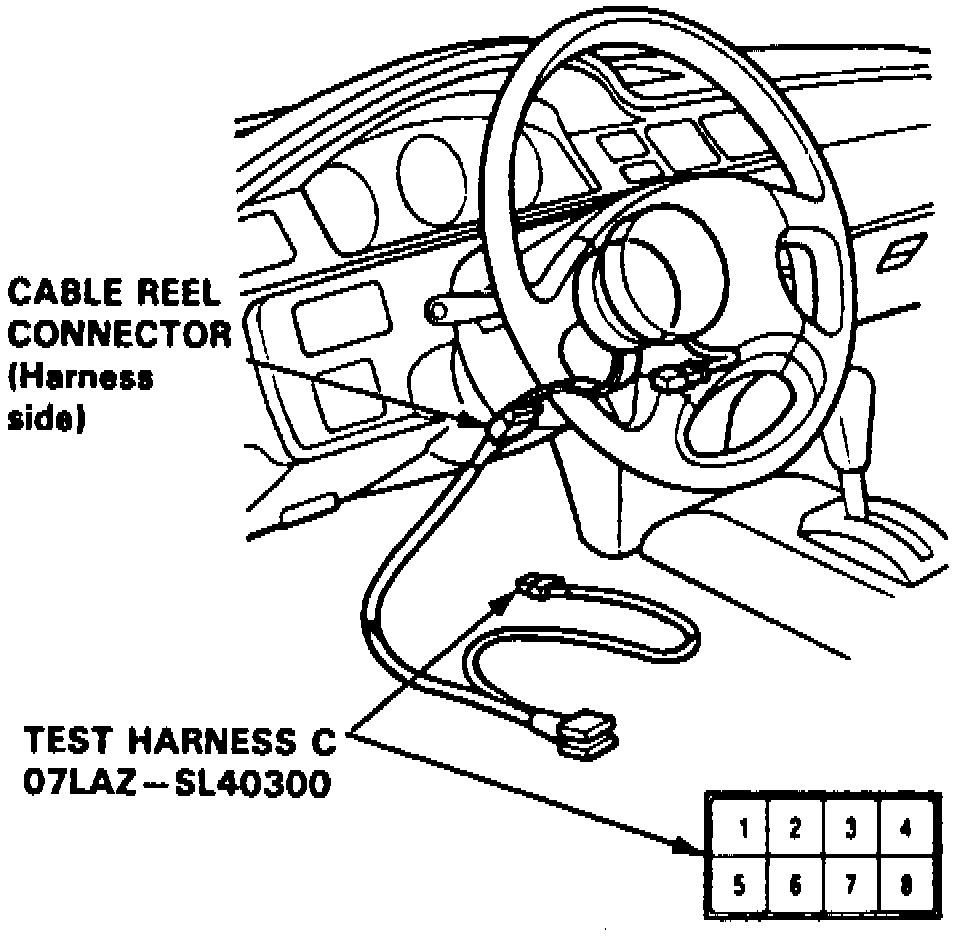
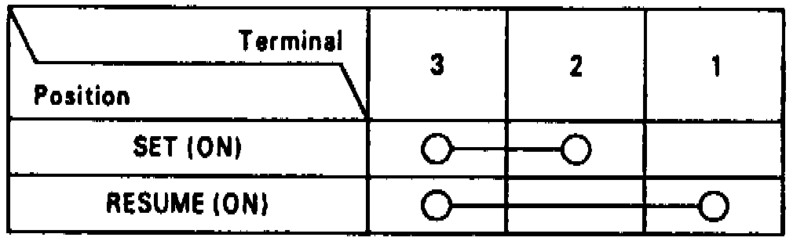
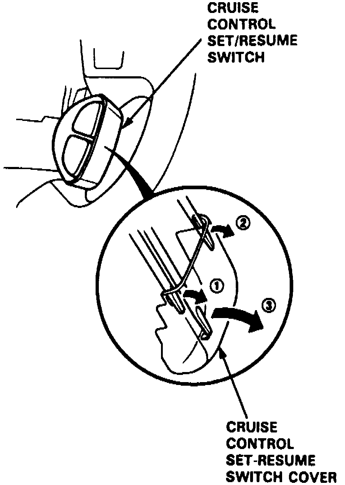
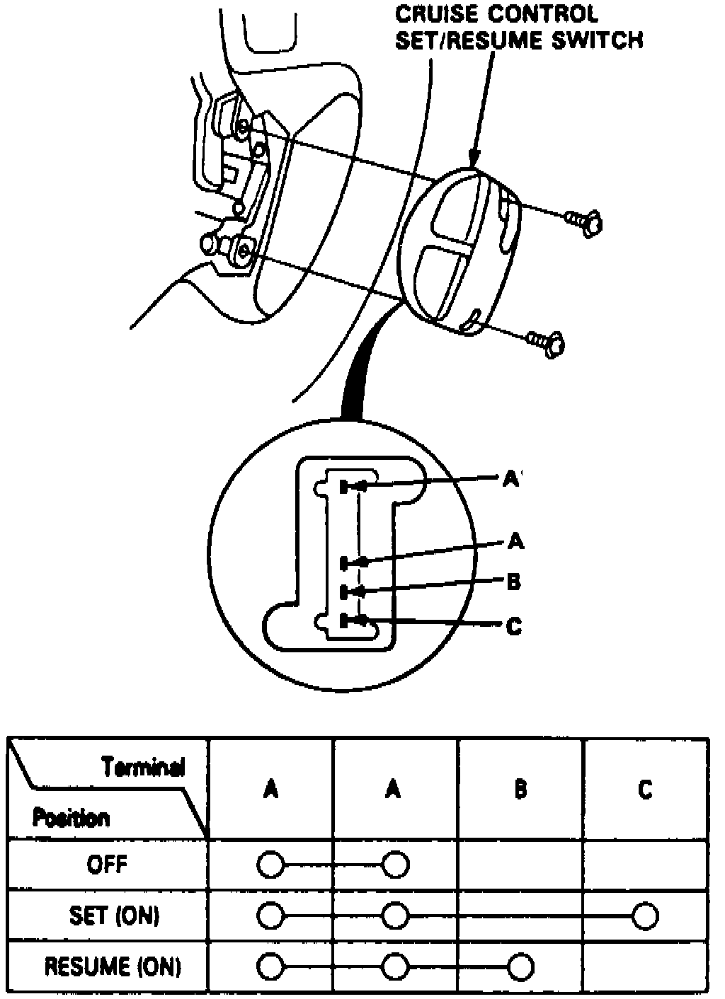

Set/Resume/Cancel Switch
1. Obtain five digit radio theft protection code system as outlined under Vehicle Damage Warnings, then remove dashboard lower cover and knee bolster.Fig. 22 Set/Resume/Cancel Switch Test Harness:

2. Disconnect cable reel harness 6 pin connector from SRS main harness, then connect Test Harness C or equivalent as shown, Fig. 22, to cable reel side of connector.
Fig. 23 Set/Resume/Cancel Switch Test Harness Continuity Inspection:

3. Check for continuity between terminals of test harness as shown, Fig. 23, in each switch position. If continuity exists as specified, switch is operating properly.
Fig. 24 Set/Resume/Cancel Switch Cover Removal:

4. If continuity is not as specified, remove switch as follows:
a. Remove switch cover by prying carefully between cover and switch in numbered sequence shown, Fig. 24.
b. Remove two screws and switch.
Fig. 25 Set/Resume/Cancel Switch Continuity Inspection:

5. Check for continuity between terminals as shown, Fig. 25. If no continuity exists in any position, replace switch. If continuity exists in all positions, replace cable reel.
6. Install switch cover and connect cable reel harness connector, then install knee bolster and dashboard lower cover.
7. Reactivate radio as outlined under Vehicle Damage Warnings.